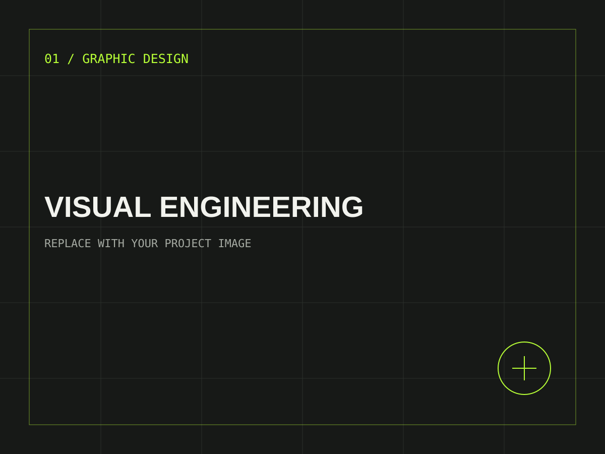

01 / VISUAL ENGINEERING
Graphic
Design.
A visual is more than decoration. It is a system for directing attention, communicating an idea, and making a message memorable.
Through composition, typography, imagery, and color, I create graphics that give concepts a clear visual identity — from promotional materials to original creative pieces.
COMPOSITION / TYPE / IMPACT